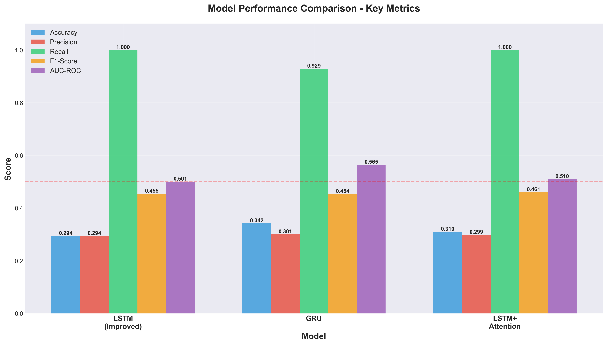
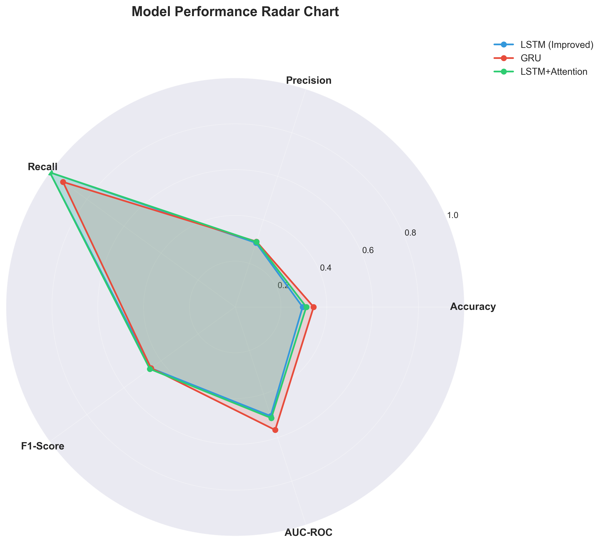
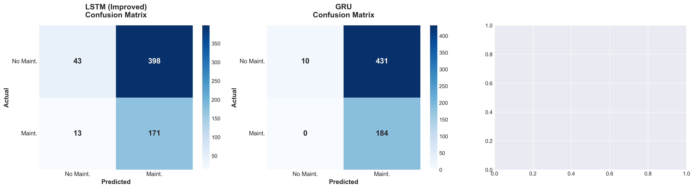

üöó EV Predictive Maintenance Model Comparison Report
üìä Executive Summary
Report Generated: 2025-10-22 19:30:37
Models Compared: LSTM (Improved) | GRU | LSTM+Attention |
Dataset: EV Predictive Maintenance Dataset (15-min intervals)
Task: Binary classification - Predict maintenance needs 1 hour ahead
üéØ Key Metrics Comparison
| Model | Accuracy | Precision | Recall | F1-Score | AUC-ROC | Parameters | Threshold |
|---|---|---|---|---|---|---|---|
| LSTM (Improved) | 0.2944 | 0.2944 | 1.0000 | 0.4549 | 0.5007 | 587,649 | 0.30 |
| GRU | 0.3424 | 0.3005 | 0.9293 | 0.4542 | 0.5649 | 444,929 | 0.35 |
| LSTM+Attention | 0.3104 | 0.2992 | 1.0000 | 0.4606 | 0.5103 | 395,905 | 0.40 |
üìà Visual Comparisons
Overall Metrics Comparison
Multi-Dimensional Performance
Performance Heatmap

Confusion Matrices
Model Efficiency Analysis

üîç Detailed Analysis
LSTM (Improved) Model
Recall
100.0%
High
Precision
29.4%
Low
AUC-ROC
0.501
Moderate
F1-Score
45.5%
GRU Model
Recall
92.9%
High
Precision
30.1%
Low
AUC-ROC
0.565
Moderate
F1-Score
45.4%
üí° Recommendations
- For Safety-Critical Applications: Use the model with highest recall to minimize missed failures
- For Cost Optimization: Focus on the model with best precision to reduce false alarms
- For Balanced Performance: Choose the model with highest F1-score
- For Overall Discrimination: Select the model with highest AUC-ROC